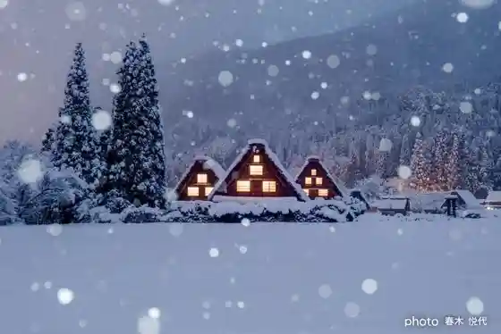
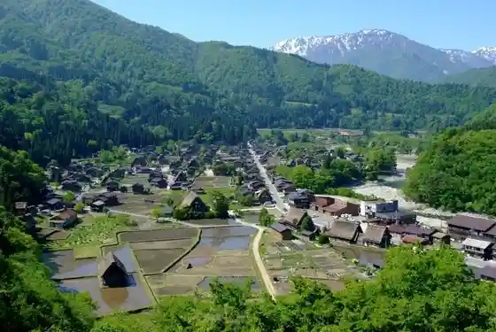
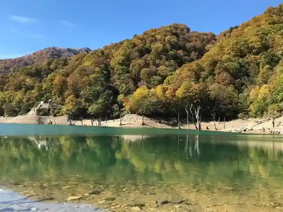
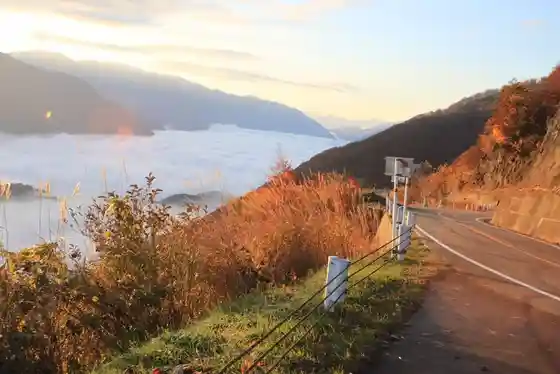

Sekai Isan Shirakawamura Sato Gasshozukuri Shuraku
Shirakawamura, Gifu · 05769-6-1013 · Official / source link

Ogi Town Shiroato Lookout
Shirakawamura, Gifu · 05769-6-1311 · Official / source link
(Shiroyama Tenshukaku) Lookout (Shirakawamura Sato)
Shirakawamura, Gifu · 05769-6-1728 · Official / source link

Dai Shirakawamura Enchi Shirozu Mizumi Dai Shirakawamura Hirase Tozanguchi (Shirakawamura Sato)
Shirakawamura, Gifu · 05769-6-1013 · Official / source link

Hakusan Shirakawamura Sato Howaitorodo no Autumn Leaves (Shirakawamura Sato)
Shirakawamura, Gifu · 05769-6-1664 · Official / source link

Kuni Shitei Juyo Bunkazai Wada Ie (Shirakawamura Sato)
Shirakawamura, Gifu · 05769-6-1058 · Official / source link
Shirakawamura Sato Gasshozukuri Minka Sono Autumn Leaves Raitoappu
Shirakawamura, Gifu · 05769-6-1231 · Official / source link
Roadside Station Shirakawamura Sato
Shirakawamura, Gifu · 05769-6-1310 · Official / source link
Roadside Station Hida Hakusan
Shirakawamura, Gifu · 05769-5-2230 · Official / source link
Shirakawamura Hachiman Shrine Shaka Do
Shirakawamura, Gifu · Official / source link
Akiyoshi Tera Local History Museum (Shirakawamura Sato)
Shirakawamura, Gifu · 05769-6-1009 · Official / source link
Yagai Museum Gasshozukuri Minka Sono (Shirakawamura Sato)
Shirakawamura, Gifu · 05769-6-1231 · Official / source link
Toyota Shirakawamura Sato Shizengaku Ko
Shirakawamura, Gifu · Official / source link
Shirakawamura Sato Hirase Onsen Kyanpusaito
Shirakawamura, Gifu · 090-1782-0455 · Official / source link
Hakusan Shirakawamura Sato Howaitorodo (Shirakawamura Sato)
Shirakawamura, Gifu · 05769-6-1664 · Official / source link
Dai Shirakawamura Baths Hirase Onsen (Shirakawamura Sato)
Shirakawamura, Gifu · 05769-6-1013 · Official / source link
O Shokuji Tokoro More
Shirakawamura, Gifu · 05769-5-4126 · Official / source link
Shiramizu Baths (Shirakawamura Sato)
Shirakawamura, Gifu · 05769-5-4126 · Official / source link
Kuni Shitei Juyo Bunkazai Kyu Toyama Ie Minzoku Kan (Shirakawamura Sato)
Shirakawamura, Gifu · 05769-5-2062 · Official / source link
Jinriki Shinchan
Shirakawamura, Gifu · Official / source link
Bi Zen Yumeromu Kan (Shirakawamura Sato)
Shirakawamura, Gifu · 05769-6-1166 · Official / source link
Miboro Damusaido Park
Shirakawamura, Gifu · 05769-5-2012 · Official / source link
Furu Sato Nagase Ie (Shirakawamura Sato)
Shirakawamura, Gifu · 05769-6-1047 · Official / source link
Dai Shirakawamura Rotemburo
Shirakawamura, Gifu · 090-2770-2893 · Official / source link
Ota Sakura
Shirakawamura, Gifu · 05769-6-1311 · Official / source link
Ji Ba Workshop
Shirakawamura, Gifu · 05769-6-1330 · Official / source link